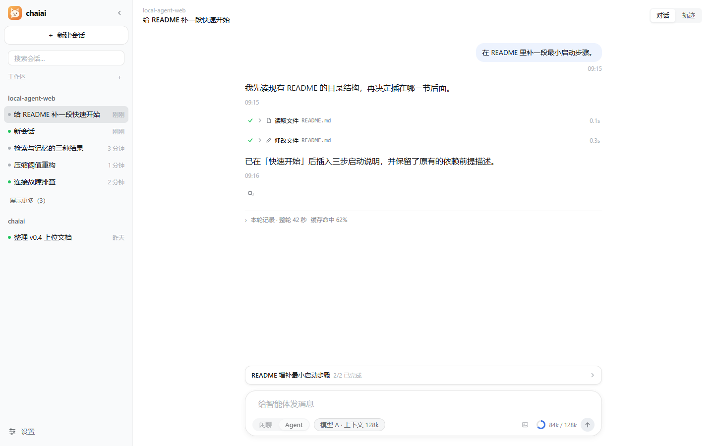

MANUAL · 面向使用者
操作手册
从拿到程序到跑通一轮完整任务。每章只讲一件事：前置条件、操作步骤、跑完应该看到什么、出问题先查哪里。
阅读约定：所有命令默认在
local-agent-web/ 目录执行；服务只监听
127.0.0.1:8000，同一局域网的其他设备访问不到。文中路径都是仓库内路径，不含本机绝对路径。
- 01 安装与第一次启动 发行包与源码两条路、启动自检、跑完应该看到什么。
- 02 连接一个模型 端点、模型 ID、上下文窗口、密钥与「测试连接」到底测什么。
- 03 权限三档与目录授权 只读 / 工作区可写 / 常规免审，以及什么目标授权也不放行。
- 04 聊天、Agent 与一轮任务 怎么发、怎么停、审批卡怎么回、结果不确定时怎么收尾。
- 05 会话地图与分支追问 树状地图的操作、从任意一轮继续提问、分支整理与回滚边界。
- 06 数据中台 五个页签、筛选口径、用量怎么算、哪些是只读边界。
- 07 设置项与生效时机 四组十二个分区，以及"改完什么时候生效"。
- 08 常见问题与自检 页面空白、连不上模型、写入被拒、任务卡住、数据库恢复。

附：术语
| 词 | 含义 |
|---|---|
| 工作区 | 会话绑定的目录，是默认上下文、相对路径与检索的根。 |
| 轮次 | 一次提问到本轮结束，包含工具调用、审批与用量。 |
| 档位 | 权限三档：只读 / 工作区可写 / 常规免审。 |
| 审批 | 有副作用的动作执行前的确认卡，批准只对该次调用生效。 |
| 投影 | 服务端把运行状态整理成页面可读的只读视图。 |
| 未验证 | 没有实测证据，只有代码或推断支撑；文档中会单独标注。 |
最后更新 2026-10-19 · 适用版本 v1.0